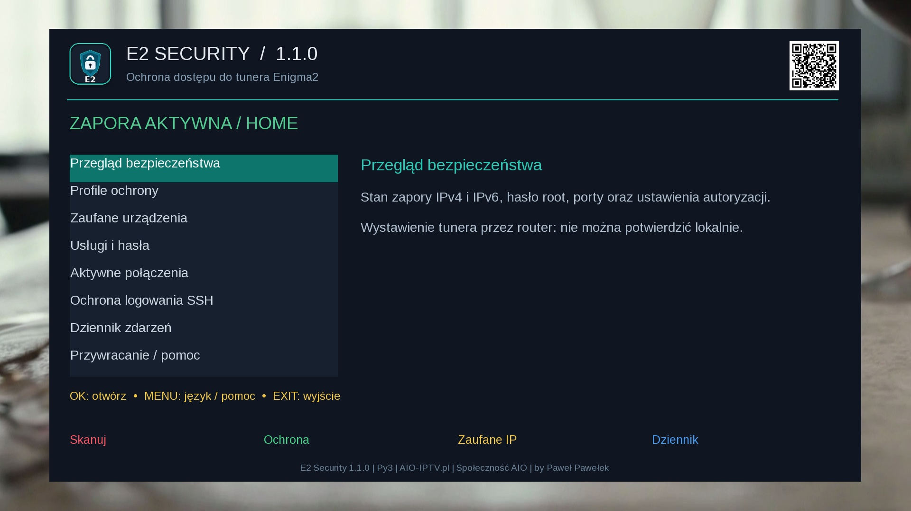

OFICJALNE AKTUALNOŚCI • AIO IPTV PL
Co nowego w AIO?
Nowe wersje wtyczek, aplikacji, list kanałów, systemów i ważne komunikaty — w jednym miejscu, bez szukania po zewnętrznych grupach.
✓Oficjalne źródłoKomunikaty publikowane bezpośrednio w ekosystemie AIO-IPTV.pl.
↻Aktualizacje projektówWtyczki, systemy, aplikacje, listy kanałów i poprawki.
◎Powiązane ze SpołecznościąPo zalogowaniu możesz komentować, obserwować i otrzymywać powiadomienia.
NAJNOWSZE WYDANIA
Najważniejsze aktualizacje
Szybki dostęp do ostatnich dużych zmian i nowych projektów.
Najnowsza aktualizacja

Simple IPTV EPG 3.1.0 r1
Lepszy import EPG dla IPTV, mapowanie BouquetMakerXtream/XMLTV, poprawione eEPGCache, GZIP i diagnostyka.
Zobacz aktualizację →
Nowy projekt

E2 Security 1.1.1
Zapora IPv4/IPv6, profile DOM, ZAUFANE i LOCKDOWN, audyt oraz ochrona logowania SSH.
Poznaj wtyczkę →
Aktualizacja

AIO Panel 17.0.0
Nowe wtyczki, dodatki i skórki, weryfikacja list kanałów oraz usprawnione aktualizacje i instalatory.
Zobacz zmiany →OFICJALNY STRUMIEŃ
Wszystkie komunikaty AIO
Wyszukaj konkretną aktualizację albo wybierz kategorię. Poniżej ładowane są oficjalne wpisy ze Społeczności AIO.
AIO
Społeczność AIOŁadowanie konta…